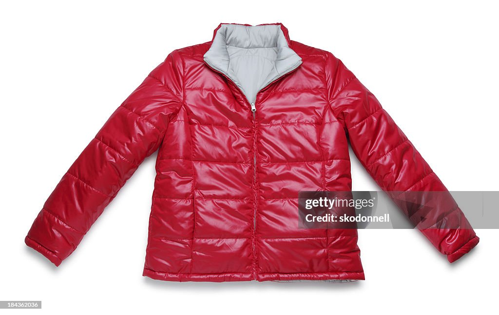
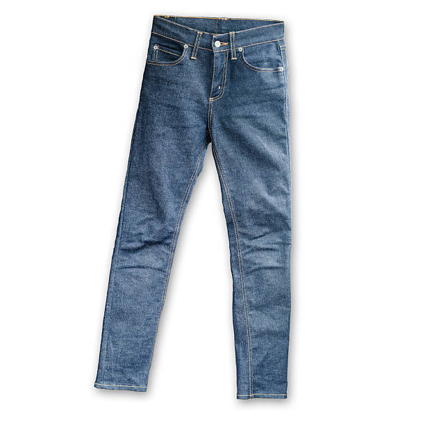
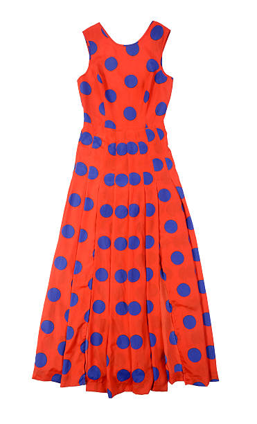

Shirts: The Art of Expressing Style: A Shirt for Every Occasion
In the vibrant tapestry of fashion, shirts emerge as the versatile canvases upon which we paint our
unique expressions of style. Whether navigating the professional landscape or strolling through casual
weekend rendezvous, the right shirt can effortlessly transform a look. Crisp button-downs, adorned with
subtle patterns or bold colors, seamlessly bridge the gap between sophistication and comfort in the corporate
realm. Meanwhile, the laid-back charm of a well-worn flannel becomes a sartorial emblem of relaxation,
perfect for lazy Sundays and impromptu adventures. The fashion-forward can revel in the myriad textures and
designs, from the timeless elegance of classic white linen to the daring allure of printed silk. In the grand
gallery of attire, shirts stand as a testament to the wearer's personality, whispering stories of
professionalism, leisure, and unapologetic individuality with every stitch and fold. So, let your wardrobe
be a reflection of the diverse chapters of your life, each shirt a chapter waiting to be written and worn.
One of the most wonderful stores to purchase shirts is: Amazon

Coats: Embracing Elegance and Weathering Trends
From the luxurious embrace of wool to the contemporary allure of faux fur, coats offer a tactile journey through
textures and materials. They become not just layers to combat the cold but canvases on which we drape our
personalities. A bold statement trench, a cozy oversized parka, or a sleek tailored overcoat - each selection
encapsulates a unique chapter in our style narrative. In the ever-evolving landscape of fashion, coats stand as
steadfast companions, weathering trends and fads. They are more than garments; they are guardians of comfort
and champions of expression, enveloping us in warmth while ensuring we stride through life with confidence
and panache. So, let your coat be the exclamation mark to your ensemble, a stylish punctuation in the symphony
of seasonal shifts.
One of the most wonderful stores to purchase coats is: H&M

Pants: Crafting Comfort in Every Stitch
In the world of fashion, pants are the unsung heroes, offering a perfect blend of comfort and style.
From the tailored precision of dress trousers to the laid-back ease of denim, each pair narrates a unique story.
Slim-fit chinos embody versatility, seamlessly transitioning from casual Fridays to weekend adventures.
Wide-leg trousers, reminiscent of vintage charm, make a bold statement in the modern fashion lexicon.
With an array of fabrics and cuts, pants become the foundation upon which our daily sartorial symphony takes shape.
So, stride confidently through the day, for in the world of pants, comfort and style are woven into every thread.
One of the most wonderful stores to purchase pants is: Target

Dresses: Effortless Elegance Tailored for Every Moment
In the realm of fashion, dresses stand as the epitome of femininity, offering a seamless fusion of grace and
versatility. From the timeless silhouette of the little black dress to the whimsical charm of flowing maxi gowns,
each dress becomes a canvas for personal expression. A sheath dress, with its clean lines, effortlessly transitions
from office chic to evening glamour, while a floral sundress captures the essence of carefree summer days.
The playful twirl of a fit-and-flare design or the sophistication of a body-hugging midi – dresses celebrate
the myriad facets of a woman's style.
One of the most wonderful stores to purchase dresses is: Forever 21